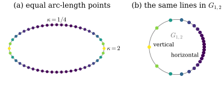
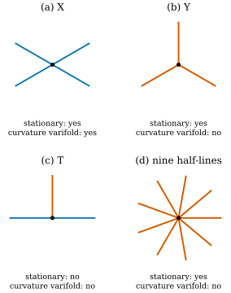

46.6 The Second Fundamental Form, Weakly
Goals
- tangent plane의 projection \(P(x)\)를 tangent 방향으로 미분한 \(A_{ijk} = \inner{\nabla^MP_{jk}}{e_i}\)와 second fundamental form의 coefficient \(B^k_{ij}\)가 서로를 결정한다는 것(\(A_{ijk} = B^k_{ij} + B^j_{ik}\))을 증명하고, circle, sphere, ellipse에서 계산할 수 있다.
- divergence theorem에서 \(P\)에 대한 두 부분적분 공식을 유도하고, 그것을 varifold로 옮긴 Hutchinson의 generalized second fundamental form과 curvature varifold를 정의할 수 있다.
- curvature varifold는 first variation에 singular part가 없다는 것을 보이고, half-line들의 junction이 curvature varifold인 조건(모든 half-line이 반대쪽 짝을 가진다)을 증명할 수 있다.
- stationary인 것과 curvature varifold인 것의 차이를 X, Y, T, 아홉 갈래 junction으로 설명하고, Chapter 48이 정의를 바꾸는 이유를 말할 수 있다.
Prerequisites
- Section 46.3: plane을 projection matrix로 보는 것(Definition 46.3.1, Proposition 46.3.2), \(G_{1,2}\)가 원이라는 것(Example 46.3.3), tangential divergence(Definition 46.3.5). Section 46.4: rectifiable varifold와 integral varifold(Definition 46.4.4). Section 46.5: smooth surface의 first variation(Proposition 46.5.3), generalized mean curvature(Definition 46.5.4), junction(Example 46.5.8).
- second fundamental form(Definition 8.2.1), Weingarten map(Section 39.1), mean curvature vector(Proposition 39.3.1)
Motivation
Section 46.5는 varifold에서 mean curvature를 얻었다. 그러나 \(\vec H\)는 second fundamental form의 trace 하나일 뿐이다. 3DGS에서 Gaussian의 긴 축을 덜 휜 방향에 맞추거나, principal direction을 따라 새 Gaussian을 놓으려면 second fundamental form 전체가 필요하다([GeoSplat25, §2.2]). 고전적으로 second fundamental form은 unit normal의 도함수 \(-d\mathbf{N}\)으로 정의했다(Definition 8.2.1). varifold에는 normal의 부호가 없고 plane만 있으며, codimension이 \(1\)보다 클 수도 있다. 그런데 varifold는 각 점의 plane \(S\), 곧 projection matrix \(P\)를 기억한다. 그렇다면 \(\mathbf{N}\) 대신 \(P\)를 미분하면 되지 않을까? \(P = I - \mathbf{N}\mathbf{N}^{\mathsf T}\)는 \(\mathbf{N}\)의 부호에 무관하다. 이 절은 먼저 smooth submanifold에서 \(P\)의 도함수가 second fundamental form 전체를 담고 있음을 보이고, 그 도함수를 Section 46.5와 같은 방식으로 부분적분 공식에 넣어 varifold에서 정의한다. 이것이 Hutchinson의 curvature varifold다. 마지막으로 이 정의가 junction에 대해 아주 엄격하다는 것을 본다. 그 엄격함이 [BLM22]가 정의를 고치는 이유다.
The Derivative of the Tangent Projection
\(M\)이 \(\R^n\)의 \(C^2\) \(d\)-submanifold이고 \(P(x)\)가 \(T_xM\)으로의 orthogonal projection이라 하자. \(U \in \R^n\)에 대해 \(U^{\top} = PU\), \(U^{\perp} = U - PU\)로 쓴다. tangent vector field \(X, Y\)의 second fundamental form은 \(\mathrm{II}(X, Y) = (D_XY)^{\perp}\)이다(\(D\)는 \(\R^n\)의 방향 미분). \(\R^3\)의 surface에서 unit normal \(\mathbf{N}\)을 고르면 \(\inner{D_XY}{\mathbf{N}} = -\inner{Y}{D_X\mathbf{N}} = \inner{WX}{Y}\)이므로 \(\mathrm{II}(X, Y) = \inner{WX}{Y}\,\mathbf{N}\)이다. 곧 Definition 8.2.1의 scalar second fundamental form에 \(\mathbf{N}\)을 곱한 것이다. 모든 vector에 대해 정의되도록 \(B(U, V) = \mathrm{II}(U^{\top}, V^{\top})\)(\(U, V \in \R^n\))로 늘리고, 표준 basis \(e_1, \dots, e_n\)에서 성분을 잡는다.
함수 \(f\)의 tangential gradient를 \(\nabla^Mf = P\nabla f\)로 쓴다. \(f\)가 \(M\) 위에서만 정의되어 있어도 \(\inner{\nabla^Mf}{U}\)는 속도 \(U^{\top}\)로 \(M\) 위를 지나는 curve를 따라 미분한 것이므로 뜻이 있다. projection의 각 성분 \(P_{jk}\)는 \(M\) 위의 함수이고, 그 tangential 도함수를 모은 것이 다음 \(n^3\)개의 수다.
\(A_{ijk}\)는 tangent 방향 \(Pe_i\)로 움직일 때 \(P\)의 \((j, k)\) 성분이 변하는 비율이다. tangent vector \(U\) 방향의 도함수는 matrix \((D_UP)_{jk} = \sum_iU_iA_{ijk}\)이다.
Proposition 46.6.1 (the derivative of the tangent projection). 위의 기호에서 다음이 성립한다.
- (a) tangent vector \(U\)와 \(a, b \in \R^n\)에 대해 \(\inner{(D_UP)a}{b}\) \(= \inner{B(U, a)}{b} + \inner{a}{B(U, b)}\)이다. 성분으로는
- (b) 거꾸로 \(B\)는 \(A\)로 정해진다.
- (c) \(A_{ijk} = A_{ikj}\), \(\sum_qA_{iqq} = 0\)이고, \(\sum_qA_{qiq} = \vec H_i\)이다. 여기서 \(\vec H = \sum_{l=1}^d\mathrm{II}(\tau_l, \tau_l)\)(\(\tau_1, \dots, \tau_d\)는 \(T_xM\)의 orthonormal basis)는 (46.5.4)의 mean curvature vector이고, \(\vec H_i\)는 그 \(i\)번째 성분이다.
- (d) hypersurface(\(d = n - 1\))에서 unit normal \(\mathbf{N}\)과 \(W = -d\mathbf{N}\)을 쓰면 \(D_UP = (WU)\mathbf{N}^{\mathsf T} + \mathbf{N}(WU)^{\mathsf T}\)이고, 따라서 \(\norm{D_UP} = \abs{WU}\)(operator norm)이다.
Proof idea: 고정된 vector \(a\)의 tangent 성분 \(a^{\top} = Pa\)를 \(M\) 위의 vector field로 보고 미분한다. normal 성분은 정의대로 \(\mathrm{II}\)이고, tangent 성분은 \(\inner{a^{\perp}}{Y} = 0\)을 미분해서 얻는다.
Proof. (a) \(a\)가 상수이므로 \((D_UP)a = D_U(a^{\top})\)이다. \(a^{\top}\)는 tangent field이므로 이 vector의 normal 성분은 \(\mathrm{II}(U, a^{\top}) = B(U, a)\)이다. tangent 성분을 보자. tangent field \(Y\)에 대해 \(\inner{a^{\perp}}{Y} = 0\)을 \(U\)로 미분하면 \(\inner{D_Ua^{\perp}}{Y} = -\inner{a^{\perp}}{D_UY}\)이고, \(D_Ua^{\top} = -D_Ua^{\perp}\)(\(a = a^{\top} + a^{\perp}\)가 상수)이므로
\[ \begin{aligned} \inner{D_Ua^{\top}}{Y} &= \inner{a^{\perp}}{D_UY} = \inner{a^{\perp}}{\mathrm{II}(U, Y)} \\ &= \inner{a}{B(U, Y)} \end{aligned} \]
이다(\(\mathrm{II}\)가 normal이므로 \(a^{\perp}\)를 \(a\)로 바꿔도 된다). \(b = b^{\top} + b^{\perp}\)로 나누어 \(Y = b^{\top}\)를 넣으면 \(\inner{(D_UP)a}{b}\) \(= \inner{B(U, a)}{b^{\perp}} + \inner{a}{B(U, b^{\top})}\) \(= \inner{B(U, a)}{b} + \inner{a}{B(U, b)}\)이다. \(U = Pe_i\), \(a = e_j\), \(b = e_k\)를 넣고 \(B(Pe_i, \cdot) = B(e_i, \cdot)\), \(P_{kj} = P_{jk}\)를 쓰면 (46.6.3)이다.
(b) \(D\)는 torsion이 없으므로 \(D_XY - D_YX = [X, Y]\)가 tangent이고, 따라서 \(\mathrm{II}\)와 \(B\)는 symmetric이다(\(B^k_{ij} = B^k_{ji}\)). (46.6.3)을 세 번 쓰면 \(A_{ijk} + A_{jik} - A_{kij}\) \(= (B^k_{ij} + B^j_{ik}) + (B^k_{ji} + B^i_{jk}) - (B^j_{ki} + B^i_{kj})\) \(= 2B^k_{ij}\)이다.
(c) \(P\)가 symmetric이므로 \(A_{ijk} = A_{ikj}\)이고, \(\tr P = d\)가 상수이므로 \(\sum_qA_{iqq} = \inner{\nabla^M(\tr P)}{e_i} = 0\)이다. (46.6.3)에서 \(\sum_qA_{qiq} = \sum_qB^i_{qq} + \sum_qB^q_{qi}\)이다. 첫 합은 \(\inner{\sum_qB(e_q, e_q)}{e_i}\)이고, \(B\)가 bilinear이고 \(\sum_q(Pe_q)(Pe_q)^{\mathsf T} = P = \sum_l\tau_l\tau_l^{\mathsf T}\)이므로 \(\sum_qB(e_q, e_q) = \sum_l\mathrm{II}(\tau_l, \tau_l) = \vec H\)이다. 둘째 합은 linear map \(a \mapsto B(a, e_i)\)의 trace다. 이 map은 normal vector를 \(0\)으로 보내고 값이 normal space에 있으므로, tangent와 normal로 나눈 basis에서 대각 성분이 모두 \(0\)이다. 그래서 trace가 \(0\)이다.
(d) hypersurface에서 \(B(U, a) = \inner{WU}{a^{\top}}\mathbf{N} = \inner{WU}{a}\mathbf{N}\)(\(WU\)는 tangent)이다. (a)에 넣으면 \(\inner{(D_UP)a}{b} = \inner{WU}{a}\inner{\mathbf{N}}{b}\) \(+ \inner{a}{\mathbf{N}}\inner{WU}{b}\)이고, 이것이 주어진 matrix다. \(WU \perp \mathbf{N}\)이므로 이 matrix는 \(WU/\abs{WU}\)와 \(\mathbf{N}\)이 펼치는 평면에서 \(\begin{pmatrix}0 & \abs{WU} \\ \abs{WU} & 0\end{pmatrix}\)이고, 그 밖에서는 \(0\)이다. eigenvalue가 \(\pm\abs{WU}\)이므로 operator norm은 \(\abs{WU}\)이다.
곧 \(P\)의 tangential 도함수는 second fundamental form을 빠짐없이 담고 있다. (46.6.4)가 그것을 꺼내는 공식이다. (c)의 세 성질은 뒤에서 varifold의 curvature가 만족해야 할 “구조 조건”으로 다시 나온다. verify는 sphere, torus \(T_{2,0.8}\), helix(\(n = 3\), \(d = 1\), codimension \(2\)), ellipse에서 \(A\)를 \(P\)의 finite difference로, \(B\)를 parametrization의 이계도함수로 따로 계산해 (a)–(d)를 비교한다.
Example 46.6.2 (the derivative of \(P\) on the running examples). (a) circle. 반지름 \(r\)인 circle을 arc length \(s\)로 반시계 방향으로 돌면 \(P = \mathbf{t}\mathbf{t}^{\mathsf T}\)이고 \(\mathbf{t}' = \tfrac1r\mathbf{n}\)(\(\mathbf{n} = -\mathbf{x}/r\)은 안쪽 normal)이므로
\[ \frac{dP}{ds} = \mathbf{t}'\mathbf{t}^{\mathsf T} + \mathbf{t}\,\mathbf{t}'^{\mathsf T} = \frac1r\big(\mathbf{n}\mathbf{t}^{\mathsf T} + \mathbf{t}\mathbf{n}^{\mathsf T}\big) \]
이다. eigenvalue는 \(\pm\tfrac1r\)이므로 \(\norm{dP/ds} = \tfrac1r = \kappa\)이다. curve에서는 \(A_{ijk} = \mathbf{t}_i(dP/ds)_{jk}\)이므로 \(\sum_qA_{qiq} = \big((dP/ds)\mathbf{t}\big)_i\)이고, \((dP/ds)\mathbf{t} = \tfrac1r\mathbf{n} = \vec H\)이다. 일반 plane curve에서도 같은 계산으로 \(dP/ds = \kappa_s(\mathbf{n}_s\mathbf{t}^{\mathsf T} + \mathbf{t}\mathbf{n}_s^{\mathsf T})\), \(\norm{dP/ds} = \abs{\kappa_s}\)이다.
(b) sphere. 원점이 중심이고 반지름이 \(r\)인 sphere에서 \(P = I - \mathbf{x}\mathbf{x}^{\mathsf T}/r^2\)이다. \(-x_jx_k/r^2\)를 방향 \(Pe_i\)로 미분하면
\[ \begin{aligned} A_{ijk} &= -\frac{P_{ij}x_k + P_{ik}x_j}{r^2}, \\ B^k_{ij} &= -\frac{P_{ij}x_k}{r^2} \end{aligned} \]
이다(둘째 식은 (46.6.4)). \(P\mathbf{x} = 0\), \(\tr P = 2\)이므로 \(\sum_qA_{qiq} = -2x_i/r^2\), 곧 \(\vec H = -2\mathbf{x}/r^2\)이고, 이것은 Proposition 46.5.3 뒤에서 구한 값(안쪽, 크기 \(2/r\))과 같다. 바깥쪽 \(\mathbf{N} = \mathbf{x}/r\)이면 tangent space에서 \(W = -\tfrac1rI\)이고 \(B(U, V) = \inner{WU^{\top}}{V^{\top}}\mathbf{N}\)이 둘째 식과 같다.
(c) ellipse. \((2\cos t, \sin t)\)에서 \(\norm{dP/ds} = \kappa\)는 vertex \((\pm2, 0)\)에서 \(2\), 위아래 \((0, \pm1)\)에서 \(\tfrac14\)이다. \(G_{1,2}\)의 좌표 \((P_{11} - P_{22}, 2P_{12}) = (\cos2\theta, \sin2\theta)\)(\(\theta\)는 tangent의 각, Example 46.3.3)에서는 각이 두 배가 되므로, 점이 원 위를 속력 \(2\abs{d\theta/ds} = 2\kappa\)로 움직인다.
Verification: verify/v-46-6-weak-second-fundamental-form.py
Figure 46.6.1은 (c)를 그림으로 본 것이다. (a)는 ellipse 위에 arc length 간격 \(ds = L/48 = 0.2018\)로 찍은 점 48개를 curvature로 칠한 것이다. 노랑이 vertex(\(\kappa = 2\)), 짙은 보라가 위아래(\(\kappa = \tfrac14\))다. (b)는 그 점들의 tangent line을 \(G_{1,2}\)의 점으로 옮긴 것이다. 먼저 점이 24개뿐이라는 데 주목하자. ellipse의 서로 반대편 두 점은 tangent line이 평행하므로 \(G_{1,2}\)에서 같은 점이 된다. 위아래의 평평한 부분은 거의 가로선이므로 오른쪽 \((1, 0)\) 근처에 촘촘히 모이고, 이웃한 점 사이의 각은 \(0.1013\)으로 \(2\kappa\,ds = 0.1009\)와 거의 같다. vertex는 세로선이므로 왼쪽 \((-1, 0)\)이고, 그 이웃과의 각은 \(0.7634\)까지 벌어진다(\(2\kappa\,ds\)는 vertex에서 \(0.8074\)인데 \(\kappa\)가 한 칸 사이에 빨리 줄어서 조금 작다). 같은 거리를 걸었을 때 tangent plane이 \(G_{1,2}\)에서 움직이는 거리가 curvature에 비례한다. 이 좌표에서는 \(2\kappa\)이고, operator norm으로 재면 정확히 \(\norm{dP/ds} = \kappa\)다.

Integration by Parts
Section 46.5에서 mean curvature를 varifold로 옮긴 방법은 divergence theorem이었다. \(\delta V(X) = -\int\inner{\vec H}{X}\)라는 적분 공식만 남기고, 거기서 \(\vec H\)를 미지의 함수로 둔 것이다. \(P\)의 도함수에도 같은 일을 한다. (46.5.3)은 일반 \(d\), \(n\)에서도 \(\vec H = \sum_l\mathrm{II}(\tau_l, \tau_l)\)로 같은 꼴로 성립한다. 증명도 같다. normal 성분 \(\varphi\nu\)(\(\nu\)는 unit normal field)에서 \(\divg_M(\varphi\nu) = \varphi\sum_l\inner{D_{\tau_l}\nu}{\tau_l}\) \(= -\varphi\inner{\nu}{\vec H}\)이기 때문이다.
Proposition 46.6.3 (integration by parts for the tangent projection). \(M\)이 compact한 \(C^2\) \(d\)-submanifold이고 \(A\), \(\vec H\)가 위와 같다고 하자.
- (a) \(M\)의 boundary \(\partial M\)의 outward unit conormal을 \(\eta\)라 하면, 모든 \(\varphi \in C^1(\R^n)\)과 \(i, j, k\)에 대해
- (b) \(\partial M = \varnothing\)이면, 위치 \(y\)와 matrix \(S\)의 함수 \(\varphi \in C^1(\R^n \times M_n(\R))\)에 대해(\(\varphi\)와 그 도함수는 \((y, P(y))\)에서 계산한다)
이다. 여기서 \(\nabla^M\varphi\)는 \(S\)를 고정하고 \(y\)에 대해 잡은 tangential gradient이고, \(D^*_{jk}\varphi = \partial\varphi/\partial S_{jk}\)는 matrix 성분에 대한 partial derivative다. [BLM22, (1.6), (4.1)].
Proof. \(C^1\) 함수 \(f\)와 \(X = fe_i\)에서 \(\divg_MX = \tr(P\,e_i\nabla f^{\mathsf T})\) \(= (P\nabla f)_i = \inner{\nabla^Mf}{e_i}\)이므로, (46.5.3)은
\[ \begin{aligned} \int_M\inner{\nabla^Mf}{e_i}\,d\mathcal{H}^d &= -\int_Mf\,\vec H_i\,d\mathcal{H}^d \\ &\quad + \int_{\partial M}f\,\eta_i\,d\mathcal{H}^{d-1} \end{aligned} \]
이다. (a) \(f = \varphi P_{jk}\)를 넣는다. product rule로 \(\inner{\nabla^Mf}{e_i} = P_{jk}\inner{\nabla^M\varphi}{e_i} + \varphi A_{ijk}\)이고, \(\varphi A_{ijk}\) 항을 오른쪽으로 옮기면 (46.6.5)다. (b) \(f(y) = \varphi(y, P(y))\)를 넣는다. chain rule로 \(\inner{\nabla^Mf}{e_i} = \inner{\nabla^M\varphi}{e_i}\) \(+ \sum_{j,k}D^*_{jk}\varphi\,\inner{\nabla^MP_{jk}}{e_i}\)이고 마지막 인자가 \(A_{ijk}\)이다. boundary 항이 없으므로 (46.6.6)이다.
(b)에서 \(\varphi(y, S) = \varphi(y)S_{jk}\)로 잡으면 \(D^*_{jk}\varphi = \varphi\)이고 (a)의 boundary 없는 경우가 된다. verify는 torus \(T_{2,0.8}\)(closed)에서 (46.6.5)의 27개 성분과, \(S\)에 대해 nonlinear인 \(\varphi(y, S) = \varphi(y)\big(\sin(S_{13} + 2S_{22}) + S_{12}^2\big)\)로 (46.6.6)을 quadrature로 확인한다. 또 위쪽 hemisphere(boundary가 equator, \(\eta = -e_3\))에서 boundary 항을 넣어야만 (46.6.5)가 맞는다는 것도 확인한다.
(46.6.6)을 보면 \(P\)의 도함수는 \(A\)로만 나타나고, \(P\) 자체는 \(\varphi\)의 인자로만 들어간다. varifold \(V = v(M, 1)\)은 \((y, S)\) 위의 measure이고 \(S = P(y)\)에 놓여 있으므로, \(\int_M\cdots\varphi(y, P(y))\,d\mathcal{H}^d\)는 그대로 \(\int\cdots\varphi(y, S)\,dV(y, S)\)로 바뀐다. 남은 것은 \(A\)뿐이다. 이것을 미지의 함수로 두고 identity를 만족하는 것으로 정의하면 된다.
Definition 46.6.4 (Hutchinson's generalized second fundamental form). \(\Omega \subseteq \R^n\)이 open set이고 \(V\)가 \(\Omega\) 위의 integral \(d\)-varifold라 하자. \((x, S)\)의 함수 \(A_{ijk} \in L^1_{\mathrm{loc}}(V)\)(\(i, j, k = 1, \dots, n\))가 있어서, 모든 \(\varphi \in C^1_c(\Omega \times M_n(\R))\)과 모든 \(i\)에 대해
이면(\(\nabla^S\varphi = S\nabla_x\varphi\)), \(A\)를 \(V\)의 generalized second fundamental form(일반화된 제2기본형식)이라 하고, 이런 \(A\)를 갖는 \(V\)를 curvature varifold(곡률 바리폴드)라 한다. [BLM22, Def. 4.1].
몇 가지를 짚어 두자.
- boundary가 없는 compact \(C^2\) submanifold \(M\)과 양의 정수 \(\theta\)에 대해 \(v(M, \theta)\)는 curvature varifold이고, \(A\)는 (46.6.2)이다(Proposition 46.6.3(b)에 \(\theta\)를 곱한다). boundary가 있으면 (46.6.7)에 boundary 항이 없어서 맞지 않는다.
- \(G_{d,n}\)이 compact이므로 \(S\) 방향의 compact support는 제약이 아니다. 그리고 \(\varphi\)는 \(S\)의 nonlinear 함수여도 된다. 이 점이 아래에서 중요해진다.
- \(\varphi\)가 \(S\)에 의존하지 않으면 \(D^*_{jk}\varphi = 0\)이고, (46.6.7)은 \(\delta V(\varphi e_i) = -\int\varphi\sum_qA_{qiq}\,dV\)가 된다. 곧 curvature varifold는 bounded first variation을 갖고, \(\delta V\)에 singular part가 없으며, \(\vec H_i = \sum_qA_{qiq}\)가 generalized mean curvature다(Definition 46.5.4, Exercise 46.6.3). 그래서 vertex가 있는 polygon, 끝점이 있는 선분, T junction은 curvature varifold가 아니다.
- [BLM22, §4]에 따르면 Hutchinson의 Indiana 논문 [Hutchinson86b, Prop. 5.2.2]에서 \(A\)는 \(S\)에 linear인 test function만으로도 \(V\)-a.e. 유일하게 정해지고, rectifiable varifold에서는 \(x\)에만 의존한다. 아래 Proposition 46.6.5 증명의 첫 단계가 그 논법의 간단한 경우다.
Junctions: Stationary Is Not Enough
\(120^\circ\) Y junction은 stationary였다(Example 46.5.8). \(\delta V = 0\)이므로 singular part도 없고 \(\vec H = 0\)이다. 위의 셋째 항목만 보면 curvature varifold가 될 자격이 있어 보인다. 그런데 (46.6.7)의 test function은 \(S\)에도 의존할 수 있다. \(S\)에 따라 다른 값을 주는 \(\varphi\)는 원점에서 만나는 세 half-line을 plane으로 구별해서 따로 본다. 따로 보면 각 half-line은 원점에서 끝나는 선분과 같다.
Proposition 46.6.5 (junctions of half-lines). 서로 다른 unit vector \(u_1, \dots, u_N \in \R^2\)과 half-line \(R_l = \{tu_l : t \gt 0\}\)에 대해 \(V = \sum_lv(R_l, 1)\)이라 하자. \(V\)가 curvature varifold인 것은 모든 \(l\)에 대해 \(-u_l\)도 \(u_1, \dots, u_N\) 가운데 하나인 것, 곧 \(V\)가 원점을 지나는 직선 몇 개의 합인 것과 동치다. 이때 \(A = 0\)이다.
Proof idea: half-line 위에서는 \(P\)가 상수라서 \(A = 0\)이어야 한다. 그러면 (46.6.7)은 원점의 boundary 항 \(-\sum_lu_l\varphi(0, P_l)\)만 남고, \(\varphi\)를 plane마다 따로 고를 수 있으므로 같은 직선에 놓인 half-line끼리 상쇄되어야 한다.
Proof. \(P_l = u_lu_l^{\mathsf T}\)라 하자. \(V\)는 \(R_l\) 위에서 \(S = P_l\)에 놓여 있다.
첫 단계: \(A = 0\). \(V\)가 curvature varifold라 하자. \(l\)과 성분 \(a, b\)를 고정하고, \(\chi \in C^1_c(M_2(\R))\)를 \(P_l\) 근처에서 \(1\), 다른 \(P_m \ne P_l\) 근처에서 \(0\)으로 잡는다. \(\psi \in C^1_c(\R^2)\)에 대해 \(\varphi(x, S) = \psi(x)\big(S_{ab} - (P_l)_{ab}\big)\chi(S)\)를 넣자. \(V\)가 놓인 곳에서는 \(S = P_l\)(또는 \(\chi = 0\))이므로 \(\varphi = 0\), \(\nabla^S\varphi = 0\)이고, \(D^*_{jk}\varphi\)는 \((j, k) = (a, b)\)일 때 \(\psi\), 아니면 \(0\)이다(\(\chi\)의 도함수에는 \(S_{ab} - (P_l)_{ab} = 0\)이 곱해진다). 그래서 (46.6.7)은 \(P_m = P_l\)인 half-line들 위에서 \(\int\psi A_{iab}\,d\mathcal{H}^1 = 0\)이 된다. \(\psi\)가 임의이므로 그 위에서 \(A_{iab} = 0\) a.e.이다.
둘째 단계. \(A = 0\)이면 (46.6.7)의 왼쪽은 \(P_l\nabla_x\varphi = u_l\inner{u_l}{\nabla_x\varphi}\)에서
\[ \begin{aligned} &\sum_l(u_l)_i\int_0^\infty\frac{d}{dt}\varphi(tu_l, P_l)\,dt \\ &= -\sum_l(u_l)_i\,\varphi(0, P_l) \end{aligned} \]
이다. 따라서 \(V\)가 curvature varifold인 것은 모든 \(\varphi\)에 대해 \(\sum_l\varphi(0, P_l)\,u_l = 0\)인 것과 동치다. 서로 다른 직선 \(L\)마다 half-line을 모으면 이 합은 \(\sum_L\varphi(0, P_L)\sum_{l : P_l = P_L}u_l\)이다. \(\varphi(x, S) = \psi(x)\chi_L(S)\)(\(\psi(0) = 1\), \(\chi_L\)은 \(P_L\)에서 \(1\), 다른 직선의 projection에서 \(0\))로 직선 하나씩 골라내면, 조건은 직선마다 \(\sum_{l : P_l = P_L}u_l = 0\)이다. 한 직선 위의 \(u_l\)은 \(\pm u_L\) 가운데 많아야 둘이므로, 합이 \(0\)인 것은 둘 다 있을 때뿐이다. 거꾸로 모든 half-line이 짝을 가지면 \(A = 0\)이 (46.6.7)을 만족한다.
[BLM22, §4]는 이 사실을 Hutchinson의 더 일반적인 정리 [Hutchinson86a], 곧 \(A \in L^p\)(\(p \gt d\))인 curvature varifold를 한 점에서 확대한 극한(tangent cone)은 multiplicity를 가진 plane 몇 개의 합이라는 정리의 결과로 소개한다. 위의 증명은 junction에 대해 그것을 직접 확인한 것이다. 둘째 단계의 식은 (46.5.7)의 \(\delta V = -\sum_lu_l\,\delta_0\)와 비교할 만하다. first variation은 원점에서 \(u_l\)을 모두 더하지만, Hutchinson의 식은 plane마다 따로 더한다.
Example 46.6.6 (four junctions). (a) 방향 \(30^\circ, 150^\circ, 210^\circ, 330^\circ\)의 X junction은 두 직선의 합이므로 curvature varifold이고 stationary다. (b) \(90^\circ, 210^\circ, 330^\circ\)의 Y junction은 \(\sum u_l = 0\)이라 stationary이지만 짝이 없으므로 curvature varifold가 아니다. \(P_1\) 근처에서만 \(1\)인 \(\chi\)로 \(\varphi = \psi(x)\chi(S)\)를 잡으면 \(A = 0\)일 때 (46.6.7)의 왼쪽이 \(-u_1 = (0, -1)\)이다. (c) \(0^\circ, 90^\circ, 180^\circ\)의 T junction은 가로선은 짝이 있지만 세로 half-line은 짝이 없고, \(\sum u_l = e_2\)라 stationary도 아니다. (d) 정9각형의 vertex 방향 \(40^\circ l\)(\(l = 0, \dots, 8\))의 아홉 half-line은 \(\sum u_l = 0\)이라 stationary이지만, \(9\)가 홀수라 어느 것도 짝이 없다.
Verification: verify/v-46-6-weak-second-fundamental-form.py
Figure 46.6.2가 네 경우를 나란히 놓은 것이다. 파란 half-line은 반대쪽 짝이 있어 직선의 일부이고, 주홍 half-line은 짝이 없다. 패널 아래의 두 줄을 비교하자. stationary는 원점에서 모든 방향을 한꺼번에 더한 균형이고, curvature varifold는 직선마다의 균형이다. (b)와 (d)는 앞의 것을 만족하지만 뒤의 것은 만족하지 않는다. 그래서 curvature varifold 쪽이 훨씬 좁다. 실제로 Hutchinson의 조건을 만족하는 junction은 (a)처럼 직선이 겹쳐 지나가는 것뿐이다.

Summary
- tangent projection의 tangential 도함수 \(A_{ijk} = \inner{\nabla^MP_{jk}}{e_i}\)와 second fundamental form의 coefficient \(B^k_{ij}\)는 \(A_{ijk} = B^k_{ij} + B^j_{ik}\), \(B^k_{ij} = \tfrac12(A_{ijk} + A_{jik} - A_{kij})\)로 서로를 정한다. \(\sum_qA_{qiq} = \vec H_i\), \(\sum_qA_{iqq} = 0\)이다(Proposition 46.6.1).
- hypersurface에서 \(D_UP = (WU)\mathbf{N}^{\mathsf T} + \mathbf{N}(WU)^{\mathsf T}\)이고 \(\norm{D_UP} = \abs{WU}\)이다. curve에서는 \(\norm{dP/ds} = \abs{\kappa_s}\)이고, \(G_{1,2}\)의 점은 속력 \(2\kappa\)로 움직인다(Example 46.6.2, Figure 46.6.1).
- divergence theorem에서 \(P\)에 대한 부분적분 공식 (46.6.5), (46.6.6)이 나온다(Proposition 46.6.3). 뒤의 것을 varifold로 옮기고 \(A\)를 미지의 함수로 둔 것이 Hutchinson의 generalized second fundamental form이고, 그것을 갖는 integral varifold가 curvature varifold다(Definition 46.6.4).
- curvature varifold의 first variation에는 singular part가 없다. half-line junction이 curvature varifold인 것은 모든 half-line이 짝을 가져 직선의 합일 때뿐이다. Y junction과 아홉 갈래 junction은 stationary이지만 curvature varifold가 아니다(Proposition 46.6.5, Example 46.6.6).
다음 절에서는 point cloud처럼 first variation이 measure조차 아닌 varifold로 돌아간다. 그런 varifold에서 근사 curvature를 정의하려면 varifold를 kernel로 부드럽게 해야 하고(convolution), 근사가 얼마나 좋은지 말하려면 두 varifold 사이의 거리가 필요하다. 이 두 도구가 [BLM17]과 [BLM22]의 공통된 틀이다.
Quick check
Exercise 46.6.1 ★ 반지름 \(r\)인 cylinder \(\{x^2 + y^2 = r^2\}\)에서 바깥쪽 \(\mathbf{N} = (\cos u, \sin u, 0)\)을 쓰자. Proposition 46.6.1(d)로 원 방향 \(e_\theta = (-\sin u, \cos u, 0)\)과 축 방향 \(e_z\)에서 \(\norm{D_UP}\)를 구하고, 일반 unit tangent \(U = \cos\alpha\,e_\theta + \sin\alpha\,e_z\)에서는 어떻게 되는지 답하여라. \(\vec H\)도 구하여라.
Solution
\(\mathbf{N}\)을 원 방향으로 미분하면 \(D_{e_\theta}\mathbf{N} = e_\theta/r\)이므로 \(We_\theta = -e_\theta/r\)이고, 축 방향으로는 \(\mathbf{N}\)이 변하지 않으므로 \(We_z = 0\)이다. (d)에서 \(\norm{D_{e_\theta}P} = 1/r\), \(D_{e_z}P = 0\)이다. 일반 \(U\)에서 \(WU = -\tfrac{\cos\alpha}{r}e_\theta\)이므로 \(\norm{D_UP} = \abs{\cos\alpha}/r\)이다. \(\vec H = \sum_l\mathrm{II}(\tau_l, \tau_l) = (-\tfrac1r + 0)\mathbf{N}\), 곧 축을 향하는 크기 \(1/r\)의 vector다.
Verification: verify/v-46-6-weak-second-fundamental-form.py
Exercise 46.6.2 ★ \(\R^3\)의 surface에서 unit tangent \(U\)에 대해 \(\norm{D_UP}_F = \sqrt2\abs{WU}\)임을 보이고, unit tangent \(U\)에 대한 \(\norm{D_UP}\)의 최댓값이 \(\max(\abs{\kappa_1}, \abs{\kappa_2})\)임을 보여라.
Solution
Proposition 46.6.1(d)의 증명에서 \(D_UP\)는 orthonormal한 두 vector \(WU/\abs{WU}\), \(\mathbf{N}\)이 펼치는 평면에서 \(\begin{pmatrix}0 & \abs{WU} \\ \abs{WU} & 0\end{pmatrix}\)이고 그 밖에서 \(0\)이므로, 성분의 제곱합은 \(2\abs{WU}^2\)이다. \(W\)는 principal direction \(e_1, e_2\)에서 \(\operatorname{diag}(\kappa_1, \kappa_2)\)이므로 \(U = \cos\beta\,e_1 + \sin\beta\,e_2\)이면 \(\abs{WU}^2 = \kappa_1^2\cos^2\beta + \kappa_2^2\sin^2\beta\)이고, 최댓값은 \(\max(\kappa_1^2, \kappa_2^2)\)이다.
Verification: verify/v-46-6-weak-second-fundamental-form.py
Exercise 46.6.3 ★★ curvature varifold \(V\)는 bounded first variation을 갖고 \(\delta V = -\vec H\norm{V}\)(singular part가 \(0\))임을 보여라. 단 \(\vec H_i(x)\)는 \(\sum_qA_{qiq}(x, S)\)를 \(x\) 위의 plane들에 대해 평균한 것이다. 이것으로 한 변이 \(1\)인 정사각형 boundary(Exercise 46.5.2)가 curvature varifold가 아님을 설명하여라.
Solution
\(\varphi(x, S) = \varphi(x)\)로 잡으면 \(D^*_{jk}\varphi = 0\)이고 \(\divg_S(\varphi e_i) = (S\nabla\varphi)_i = \inner{\nabla^S\varphi}{e_i}\)이므로, (46.6.7)은 \(\delta V(\varphi e_i) = -\int\varphi(x)\sum_qA_{qiq}(x, S)\,dV(x, S)\)이다. \(V\)를 \(x\)마다 plane의 probability distribution \(\nu_x\)로 쪼개면(Proposition 46.4.7) 오른쪽은 \(-\int\varphi\,\vec H_i\,d\norm{V}\)이고 \(\vec H_i(x) = \int\sum_qA_{qiq}(x, S)\,d\nu_x(S)\)이다. \(A \in L^1_{\mathrm{loc}}(V)\)이므로 \(\vec H \in L^1_{\mathrm{loc}}(\norm{V})\)이고, \(\abs{\delta V(X)} \le \sup\abs{X}\int_K\abs{\vec H}\,d\norm{V}\)로 bounded first variation이며 singular part가 없다. 정사각형 boundary의 first variation은 vertex의 Dirac mass \(\sqrt2\,\hat d_k\,\delta_{c_k}\)들로, 모두 singular part다. 그래서 curvature varifold가 아니다.
Exercise 46.6.4 ★ 원점에서 다음 방향으로 나가는 half-line의 varifold(multiplicity \(1\))가 stationary인지, curvature varifold인지 답하여라. (a) \(0^\circ, 90^\circ, 180^\circ, 270^\circ\) (b) \(0^\circ, 60^\circ, 180^\circ, 240^\circ\) (c) \(0^\circ, 90^\circ, 180^\circ, 225^\circ\) (d) \(0^\circ, 60^\circ, \dots, 300^\circ\)(여섯 개) (e) \(0^\circ, 72^\circ, 144^\circ, 216^\circ, 288^\circ\)
Solution
Proposition 46.6.5와 (46.5.7)를 쓴다. (a) 두 직선, 둘 다 yes. (b) \(0^\circ\)와 \(180^\circ\), \(60^\circ\)와 \(240^\circ\)가 짝이므로 두 직선이고 둘 다 yes. (c) \(\sum u_l = (-0.7071, 0.2929) \ne 0\)(Exercise 46.5.3)이고 \(90^\circ\), \(225^\circ\)가 짝이 없으므로 둘 다 no. (d) 세 직선, 둘 다 yes. (e) 정오각형 방향은 \(\sum u_l = 0\)이라 stationary이지만 짝이 없으므로 curvature varifold가 아니다.
Verification: verify/v-46-6-weak-second-fundamental-form.py
Exercise 46.6.5 ★★ Proposition 46.6.5의 junction \(V\)와 \(\varphi \in C^1_c(\R^2)\)(\(S\)에 의존하지 않는다)에 대해, (46.6.5)의 왼쪽에서 \(P\)를 \(S\)로 바꾼 양 \(\int S_{jk}\inner{\nabla^S\varphi}{e_i}\,dV\)가 \(-\varphi(0)\sum_l(u_l)_i(u_l)_j(u_l)_k\)임을 보여라. Y junction(\(90^\circ, 210^\circ, 330^\circ\))에서 이 값이 \(0\)이 아닌 성분을 하나 찾고, 아홉 half-line(\(40^\circ l\))에서는 모든 성분이 \(0\)임을 보여라.
Solution
\(R_l\) 위에서 \(S = u_lu_l^{\mathsf T}\)이고 \(\inner{\nabla^S\varphi}{e_i} = (u_l)_i\,\tfrac{d}{dt}\varphi(tu_l)\)이므로, 적분은 \(\sum_l(u_l)_j(u_l)_k(u_l)_i\int_0^\infty\tfrac{d}{dt}\varphi(tu_l)\,dt\) \(= -\varphi(0)\sum_l(u_l)_i(u_l)_j(u_l)_k\)이다. Y junction에서 \(\sum_l\inner{u_l}{e_2}^3 = 1 + 2(-\tfrac12)^3 = \tfrac34\)이고 \(\sum_l\inner{u_l}{e_1}^2\inner{u_l}{e_2} = 2\cdot\tfrac34\cdot(-\tfrac12) = -\tfrac34\)이므로 \(0\)이 아니다. \(u_l = (\cos\alpha_l, \sin\alpha_l)\)이면 \(\cos^3\alpha = \tfrac14(3\cos\alpha + \cos3\alpha)\), \(\sin^3\alpha = \tfrac14(3\sin\alpha - \sin3\alpha)\)이고 혼합항도 같은 식으로 줄어서, 모든 성분은 \(\sum_le^{i\alpha_l}\)와 \(\sum_le^{3i\alpha_l}\)의 실수부, 허수부의 linear combination이다. \(\alpha_l = 2\pi l/9\)이면 \(e^{i\alpha_l}\)와 \(e^{3i\alpha_l} = e^{2\pi il/3}\)의 합이 모두 \(0\)이다. Y junction은 \(\sum_le^{3i\alpha_l} = 3e^{3i\pi/2} \ne 0\)이라 \(0\)이 아니다. 이 양이 Chapter 48의 출발점이다 [BLM22, (4.4)].
Verification: verify/v-46-6-weak-second-fundamental-form.py